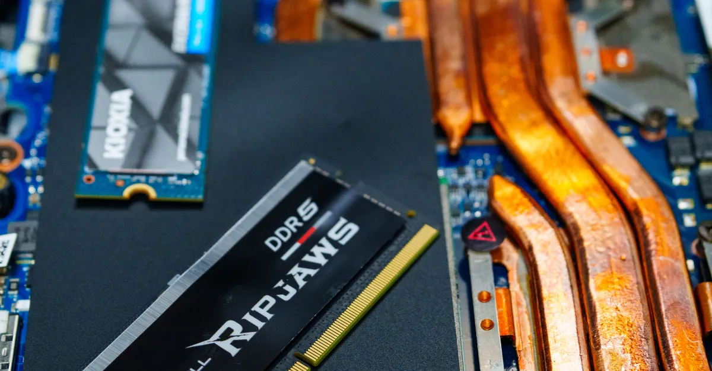

Mercado da Tecnologia
Expansão de data centers de IA deve reduzir ofertas e descontos de RAM e SSD na Black Friday
15/11/2026 às 23:49 (horário de Cuiabá)

A Black Friday de 2026 deve apresentar poucas promoções significativas em componentes de memória RAM e SSD para computadores pessoais e laptops. A escassez no varejo e os sucessivos aumentos de preços ao longo do ano decorrem da forte demanda por infraestrutura de inteligência artificial gerada pelas grandes empresas do setor de tecnologia.
Fabricantes mundiais como Micron, Samsung e SK hynix redirecionaram expressiva parcela de sua capacidade produtiva para módulos de alta largura de banda (HBM) e unidades de armazenamento voltadas ao setor corporativo, que oferecem margens financeiras superiores. Com a menor oferta de semicondutores de padrão DRAM convencional e memória Flash NAND para produtos finais de consumo, os preços de atacado e varejo sofreram pressões constantes.
Analistas alertam que grande parte dos eventuais descontos anunciados pode representar apenas ajustes cosméticos sobre valores inflacionados nos trimestres recentes. As promoções reais com estoques em liquidação devem se concentrar em linhas de entrada e padrões tecnológicos consolidados mais antigos, como módulos de memória DDR4 e unidades SSD em formato SATA de 2,5 polegadas ou conexões PCIe 3.0.